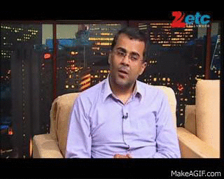

Chetan Bhagat (born 22 April 1974) is an Indian author, columnist, screenwriter, television personality and motivational speaker, known for his English-language dramedy novels about young urban middle-class Indians. A noted public figure, Bhagat also writes for columns about youth, career development[1] and current affairs[2][3] for The Times of India (in English) and Dainik Bhaskar (in Hindi).[4] Bhagat's novels have sold over seven million copies. In 2008, The New York Times cited Bhagat as "the biggest selling English language novelist in India’s history".[5][6] Bhagat's screenwriting efforts have included the dramedies Kai Po Che! (2013), 2 States (2014) and the action-superhero movie Kick (2015). He won the Filmfare Award for Best Screenplay for Kai Po Che! at the 59th Filmfare Awards in January 2014
Bhagat was born in New Delhi, India. His father was an army officer and his mother was a government employee in the agricultural department. His younger brother, Ketan Bhagat, is also a novelist. He completed his school years at The Army Public School, Dhaula Kuan in Delhi. He received his undergraduate degree in mechanical engineering from the Indian Institute of Technology Delhi in 1995 and his MBA degree from the Indian Institute of Management Ahmedabad in 1997. Bhagat recounted in an interview with Newslaundry that he applied after his studies to the investment banking company Goldman Sachs, where he was finally selected after 27 internal interviews.[7] Bhagat worked for Goldman Sachs in their Hong Kong office as an investment banker for nearly a decade and wrote Five Point Someone while in Hong Kong. When he got fired, he then had to move to Mumbai to focus full-time on his writing career. He has been married to Anusha Suryanarayanan since 1998. She hails from Tamil Nadu and was his classmate at IIM Ahmedabad.[8
Bhagat is the author of bestselling novels Five Point Someone (2004), One Night @ the Call Center (2005), The 3 Mistakes of My Life (2008), 2 States (2009), Revolution 2020 (2011), What Young India Wants (2012) (speeches and columns), Half Girlfriend (2014), Making India Awesome (2015) and One Indian Girl (2016) All the books have remained bestsellers since their release and four have inspired Bollywood films (including the hit films 3 Idiots, Kai Po Che!, 2 States and Hello). In 2008, The New York Times cited Bhagat as "the biggest selling English language novelist in India’s history".[5][6] Time magazine named him as one of the 100 Most Influential People in the World.[9] Bhagat voices his opinion frequently at leading events.[10][11][12] He quit his investment banking career in 2009, to focus on writing. He debuted as a screenplay writer with the 2014 film Kick. Bhagat has columns in The Times of India and Hindustan Times.[13] Apart from writing,Chetan has worked on TV as well as scripted several Bollywood moives.He was a judge on the Voice of India Star Anchor Hunt.[14] Chetan Bhagat also hosts 7 RCR on ABP news, which began airing 11 January 2014. The show features a series of biographies of India's prime ministerial candidates.[15] Bhagat has recived wide recongnition across the multilingual and diverse Indian society, Such recognition is unprecedented for a an English language writer. Bhagat was interviewed on Comedy Nights with Kapil. Quite recently, Bhagat was seen trolling a young achiever-author-social activist Lakshay rai for his much controversial book (now published) The Dark Age. Bhagat was trolled back as the young author used Public and moral humiliating statements to verbally rough Bhagat. Most importantly, these events are seen as a revert to JK Rowling and Dan Brown's appreciation of Rai's work globally. Many Bollywood personalities flooded in Rai's support on twitter and broadcast media. Following which a demand for Chetan's apology on accusation of besmirching young talent is sought in public attention. A movie based on his novel 'Half girlfriend' with the same title, is scheduled to be released on 19th May 2017. Among his other activities, Bhagat is known for delivering speeches on programmes organised by corporations, educational institutes, newspapers and media houses like Dainik Bhaskar, The Times of India and at other conferences apart from writing columns for the above.[16] He was the judge of the dance reality show Nach Baliye.[17] He was featured in Forbes India magazine as one of the top celebrities of India in 2016. He was listed 40th out of 100.[citation needed]